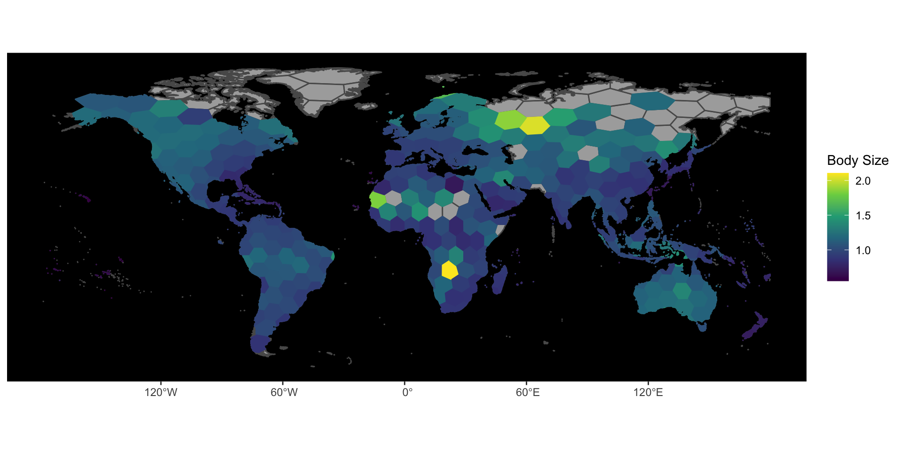
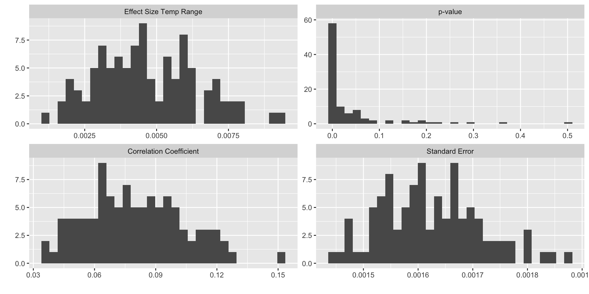
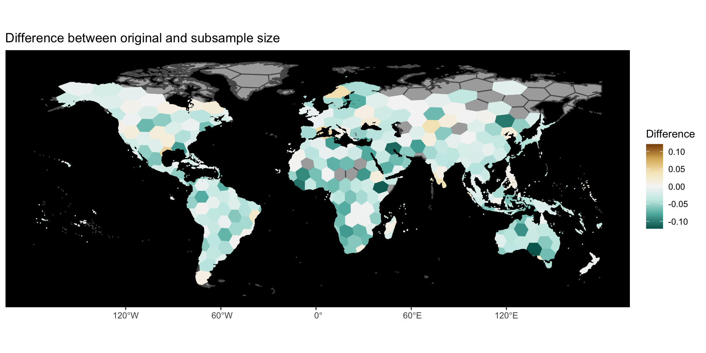

When analyzing data at large spatial scales, significant results of correlations between your response variable and predictor variable need to be better validated aside from usual metrics such as correlation coefficients. While cross-validation methods exist to validate the predictive power of a statistical analysis, such as a regression, sometimes the question that we need to ask is whether or not the pattern or correlation that is observed from the analysis is really there.
Take for example a study where we run a model assessing the effects of temperature range on the average assemblage body size of beetles. Our model shows a significant effect and a decent correlation coefficient, however there is a possibility that our results are a product of certain species influencing the data because they are more abundant or widespread. Now the question becomes whether our model is simply just capturing the variation that is contributed by only several abundant species. How do we test this?
Random sampling is an efficient approach to solving this issue. By randomly sampling a number of species (usually the minimum number of species found in a assemblage) from each assemblage (without replacement, meaning the same species isn’t sampled twice) we pull a less biased species roster as such a less biased value of body size.
Here I’ll show how to code a simple program in R to run subsampling.
Let’s load in our data. In this case we will use hexbin shapefiles.
#packages
library(sf)
library(tidyverse)
library(nlme)
library(viridis)
library(lwgeom)This is how you read in your shapefile data:
df_shp <- st_read(
"~/Desktop/hexbin_wenviron/hexbin_wenviron.shp")## Reading layer `hexbin_wenviron' from data source `/Users/leoohyama/Desktop/hexbin_wenviron/hexbin_wenviron.shp' using driver `ESRI Shapefile'
## Simple feature collection with 464 features and 10 fields
## geometry type: MULTIPOLYGON
## dimension: XY
## bbox: xmin: -177.958 ymin: -60.77272 xmax: 180 ymax: 83.6341
## geographic CRS: WGS 84#Let's look at the data
df_shp## Simple feature collection with 464 features and 10 fields
## geometry type: MULTIPOLYGON
## dimension: XY
## bbox: xmin: -177.958 ymin: -60.77272 xmax: 180 ymax: 83.6341
## geographic CRS: WGS 84
## First 10 features:
## cell SR geo_avg MAT CM MAP WET ATR
## 1 1 56 1.091213 4.7616038 -7.087847 900.9742 300.04575 26.58891
## 2 2 NA NA -0.7031792 -15.135383 638.4850 297.98941 30.03473
## 3 3 NA NA -6.1747150 -22.750118 491.6231 190.38200 36.20150
## 4 4 NA NA -12.5492020 -29.791090 146.9178 70.94612 34.76204
## 5 8 NA NA -8.4239092 -19.696692 446.2876 142.48109 22.76368
## 6 9 7 1.688046 1.1910487 -9.261226 861.5570 276.14386 23.71292
## 7 10 50 1.209047 0.9827181 -12.573601 832.6850 286.08417 29.55614
## 8 11 NA NA 2.6216834 -5.239853 1059.2101 371.68143 18.05475
## 9 12 15 1.212341 -0.6845881 -17.013023 606.3929 253.82622 34.34307
## 10 13 22 1.096853 -7.2203846 -28.350182 262.0726 130.85980 46.19601
## NPP TREE geometry
## 1 550.4055 54513.9180 MULTIPOLYGON (((8.674604 54...
## 2 385.7403 11046.1836 MULTIPOLYGON (((-162.1393 5...
## 3 NA 8948.4346 MULTIPOLYGON (((180 65.0922...
## 4 0.0000 418.3625 MULTIPOLYGON (((178.8547 71...
## 5 NA 314.5493 MULTIPOLYGON (((27.02076 78...
## 6 332.4632 37050.3672 MULTIPOLYGON (((17.5353 68....
## 7 420.8561 50186.0430 MULTIPOLYGON (((21.89008 65...
## 8 420.8124 21194.8848 MULTIPOLYGON (((-158.6881 5...
## 9 418.0304 27562.4551 MULTIPOLYGON (((-148.919 59...
## 10 287.1639 17601.9375 MULTIPOLYGON (((-154.5998 7...The data that was read in is a shapefile of the world divided into hexbins. Each row represent a hexbin polygon and there is information for different attributes for each of these hexbins:
Note: All data was averaged per hexbin
In this case we consider a hexbin as a single assemblage as such the values per hexbin represent average values for each assemblage. We will also remove any assemblages with less than 5 species to set a biologically reasonable minimum species richness.
A quick plot of this shows the distribution of body size across the world:
df_shp_master<-df_shp #make a master copy in case we need it
df_shp <- df_shp %>% filter(!SR<5)
ggplot() +
geom_sf(data = df_shp_master, alpha = 0.7) +
geom_sf(data = df_shp, aes(fill = geo_avg, color = geo_avg)) +
scale_fill_viridis_c()+
scale_color_viridis_c()+
labs(fill = "Body Size", color = "Body Size") +
theme(panel.background = element_rect(fill = "black", colour = NA),
panel.grid = element_blank())
Now let’s a build a model where we assess geo_avg (our variable for body size) as a function of ATR. We also need a model to account for spatial autocorrelation. We will use generalized least squares (GLS) regression as it permits analysis of data given the assumption that there is a high level or correlation between our residuals (a typical sign of spatial autocorrelation). Finally the model should also account for the species richness of each assemblage because more species may influence the average body size of an assemblage.To do this we need to grab coordinates for each assemblage, which we can do by getting the centroids of each hexbin:
#Get centroid coordinates
centroid<-st_centroid(df_shp)## Warning in st_centroid.sf(df_shp): st_centroid assumes attributes are constant
## over geometries of x## Warning in st_centroid.sfc(st_geometry(x), of_largest_polygon =
## of_largest_polygon): st_centroid does not give correct centroids for longitude/
## latitude datadf_shp2<-cbind(df_shp,st_coordinates(centroid))
model_df<-df_shp2 %>% st_drop_geometry() %>%
dplyr::select(cell,geo_avg, SR, ATR, X,Y) %>% drop_na() #get rid of NAs here
colnames(model_df)[5:6]<-c("lon", "lat") #rename X and Y as lat and lon
head(model_df)## cell geo_avg SR ATR lon lat
## 1 1 1.091213 56 26.58891 11.83942 58.94358
## 2 9 1.688046 7 23.71292 19.20741 69.48915
## 3 10 1.209047 50 29.55614 14.98825 64.43302
## 4 12 1.212341 15 34.34307 -156.22050 60.92071
## 5 13 1.096853 22 46.19601 -149.96528 67.06155
## 6 22 1.128458 19 38.76278 -141.02016 61.56315Now we have our dataset for our GLS model. Now we need to modify the gls() function to accept a spatial autocorrelation structure that accounts for the curvature of the earth. We can do this using modified code from stackoverflow:
#setup haversine model
#### corHaversine - spatial correlation with haversine distance
# Calculates the geodesic distance between two points specified by radian latitude/longitude using Haversine formula.
# output in km
haversine <- function(x0, x1, y0, y1) {
a <- sin( (y1 - y0)/2 )^2 + cos(y0) * cos(y1) * sin( (x1 - x0)/2 )^2
v <- 2 * asin( min(1, sqrt(a) ) )
6371 * v
}
# function to compute geodesic haversine distance given two-column matrix of longitude/latitude
# input is assumed in form decimal degrees if radians = F
# note fields::rdist.earth is more efficient
haversineDist <- function(xy, radians = F) {
if (ncol(xy) > 2) stop("Input must have two columns (longitude and latitude)")
if (radians == F) xy <- xy * pi/180
hMat <- matrix(NA, ncol = nrow(xy), nrow = nrow(xy))
for (i in 1:nrow(xy) ) {
for (j in i:nrow(xy) ) {
hMat[j,i] <- haversine(xy[i,1], xy[j,1], xy[i,2], xy[j,2])
}
}
as.dist(hMat)
}
## for most methods, machinery from corSpatial will work without modification
Initialize.corHaversine <- nlme:::Initialize.corSpatial
recalc.corHaversine <- nlme:::recalc.corSpatial
Variogram.corHaversine <- nlme:::Variogram.corSpatial
corFactor.corHaversine <- nlme:::corFactor.corSpatial
corMatrix.corHaversine <- nlme:::corMatrix.corSpatial
coef.corHaversine <- nlme:::coef.corSpatial
"coef<-.corHaversine" <- nlme:::"coef<-.corSpatial"
## Constructor for the corHaversine class
corHaversine <- function(value = numeric(0), form = ~ 1, mimic = "corSpher", nugget = FALSE, fixed = FALSE) {
spClass <- "corHaversine"
attr(value, "formula") <- form
attr(value, "nugget") <- nugget
attr(value, "fixed") <- fixed
attr(value, "function") <- mimic
class(value) <- c(spClass, "corStruct")
value
} # end corHaversine class
environment(corHaversine) <- asNamespace("nlme")
Dim.corHaversine <- function(object, groups, ...) {
if (missing(groups)) return(attr(object, "Dim"))
val <- Dim.corStruct(object, groups)
val[["start"]] <- c(0, cumsum(val[["len"]] * (val[["len"]] - 1)/2)[-val[["M"]]])
## will use third component of Dim list for spClass
names(val)[3] <- "spClass"
val[[3]] <- match(attr(object, "function"), c("corSpher", "corExp", "corGaus", "corLin", "corRatio"), 0)
val
}
environment(Dim.corHaversine) <- asNamespace("nlme")
## getCovariate method for corHaversine class
getCovariate.corHaversine <- function(object, form = formula(object), data) {
if (is.null(covar <- attr(object, "covariate"))) { # if object lacks covariate attribute
if (missing(data)) { # if object lacks data
stop("need data to calculate covariate")
}
covForm <- getCovariateFormula(form)
if (length(all.vars(covForm)) > 0) { # if covariate present
if (attr(terms(covForm), "intercept") == 1) { # if formula includes intercept
covForm <- eval(parse(text = paste("~", deparse(covForm[[2]]),"-1",sep=""))) # remove intercept
}
# can only take covariates with correct names
if (length(all.vars(covForm)) > 2) stop("corHaversine can only take two covariates, 'lon' and 'lat'")
if ( !all(all.vars(covForm) %in% c("lon", "lat")) ) stop("covariates must be named 'lon' and 'lat'")
covar <- as.data.frame(unclass(model.matrix(covForm, model.frame(covForm, data, drop.unused.levels = TRUE) ) ) )
covar <- covar[,order(colnames(covar), decreasing = T)] # order as lon ... lat
}
else {
covar <- NULL
}
if (!is.null(getGroupsFormula(form))) { # if groups in formula extract covar by groups
grps <- getGroups(object, data = data)
if (is.null(covar)) {
covar <- lapply(split(grps, grps), function(x) as.vector(dist(1:length(x) ) ) ) # filler?
}
else {
giveDist <- function(el) {
el <- as.matrix(el)
if (nrow(el) > 1) as.vector(haversineDist(el))
else numeric(0)
}
covar <- lapply(split(covar, grps), giveDist )
}
covar <- covar[sapply(covar, length) > 0] # no 1-obs groups
}
else { # if no groups in formula extract distance
if (is.null(covar)) {
covar <- as.vector(dist(1:nrow(data) ) )
}
else {
covar <- as.vector(haversineDist(as.matrix(covar) ) )
}
}
if (any(unlist(covar) == 0)) { # check that no distances are zero
stop("cannot have zero distances in \"corHaversine\"")
}
}
covar
} # end method getCovariate
environment(getCovariate.corHaversine) <- asNamespace("nlme")Now that we have modified the code we can run a GLS model:
t_range1 <- gls(log(geo_avg) ~ ATR, weights=varFixed(~1/SR),
correlation = corHaversine(form=~lon+lat, mimic="corSpher"), data = model_df)
summary(t_range1) #check model summary## Generalized least squares fit by REML
## Model: log(geo_avg) ~ ATR
## Data: model_df
## AIC BIC logLik
## -447.9113 -432.9522 227.9557
##
## Correlation Structure: corHaversine
## Formula: ~lon + lat
## Parameter estimate(s):
## range
## 4304.542
## Variance function:
## Structure: fixed weights
## Formula: ~1/SR
##
## Coefficients:
## Value Std.Error t-value p-value
## (Intercept) -0.17652234 0.022828624 -7.732500 0
## ATR 0.00573877 0.001044526 5.494135 0
##
## Correlation:
## (Intr)
## ATR -0.869
##
## Standardized residuals:
## Min Q1 Med Q3 Max
## -2.1339133 -0.2530978 0.2655791 0.7634458 2.4592526
##
## Residual standard error: 1.841149
## Degrees of freedom: 313 total; 311 residualr2<-cor(predict(t_range1), log(model_df$geo_avg))^2 #caluclate R2
r2#correlation coefficient## [1] 0.2225697Ok great, our model is amazing. It’s giving us significant effects that increasing ATR increases average body size of an assemblage. So perhaps harsher climates yield larger body sizes? Our correlation coefficient also tells us that ATR predicts 22% of the variation in body size!
Now let’s subsample. To do this we need data on every species in each hexbin. Thankfully I have this data so we just add it into the environment:
final_cell_list<-readRDS("~/Desktop/final_cell_list.rds")
head(final_cell_list)## # A tibble: 6 x 3
## # Groups: cell [6]
## cell valid_species max_HW
## <chr> <chr> <dbl>
## 1 502 Brachymyrmex degener 0.511
## 2 110 Brachymyrmex degener 0.511
## 3 131 Brachymyrmex degener 0.511
## 4 422 Camponotus atriceps 3.88
## 5 413 Camponotus atriceps 3.88
## 6 423 Camponotus atriceps 3.88We see that we have the species name, the size of the species, and the cell it belongs to.
Now we filter out cells with less than 5 species because that was the minimum threshold for an assemblage (hexbin) to be included in our dataset for analysis.
#get cell numbers with less than 5 species
remove_cell<-df_shp_master %>% st_drop_geometry() %>%
filter(SR<5) %>%
dplyr::select(cell)
#get species roster and headwidth per hexbin
species_roster<-final_cell_list %>%
filter(!cell %in% remove_cell$cell) %>% #gives me only unique species per hexbin
group_by(cell, valid_species) %>%
summarise(mean = mean(max_HW, na.rm =T)) %>%
drop_na(cell)## `summarise()` has grouped output by 'cell'. You can override using the `.groups` argument.The subsampling routine is very simple:
#ok let's run through the sampling routine
species_roster1<-subset(species_roster, cell == 1) #I get the species roster for cell 1
samples<-sample(1:nrow(species_roster1), 5, replace = F) #I then sample 5 random rows (species) w/o replacement from cell 1
species_roster1<-species_roster1[samples,] # I then grab the randomly sampled rows from the species roster of cell 1
EnvStats::geoMean(species_roster1$mean) #then I calculate the average body size of those randomly sampled species## [1] 0.7219455We just need to repeat the above for every cell and do that 100 times with this code:
set.seed(121212)
fillthis<-data.frame(cell = rep(unique(species_roster$cell),100), geo_mean = rep(rep(NA, length(unique(species_roster$cell))),100))
for(i in 1:nrow(fillthis)){
species_roster1<-subset(species_roster, cell == fillthis$cell[i])
samples<-sample(1:nrow(species_roster1), 5, replace = F)
species_roster1<-species_roster1[samples,]
fillthis$geo_mean[i]<-EnvStats::geoMean(species_roster1$mean)
}
head(fillthis)## cell geo_mean
## 1 1 1.0093369
## 2 10 1.1691026
## 3 100 0.9052897
## 4 101 0.8620742
## 5 102 0.7608040
## 6 109 0.6915264‘Fillthis’ is now a dataframe with all our subsampling data. Essentially the total number of cells subsampled for 100 times each. Now we need to run the GLS for every iteration of subsampled hexbins:
#run gls model for every run
fillthis$marker<-rep(1:100, each = length(unique(species_roster$cell)))
#get ATR,SR, and coordinates from model_df and join it to the fillthis
model_df_subset<-model_df %>%
dplyr::select(cell,ATR,SR, lon, lat)
fillthis<-left_join(fillthis, model_df_subset, by = "cell") %>%
drop_na()
#let's run these models now
model_output = data.frame(marker = seq(1,100, length.out = 100),
effect_sz_atr = numeric(length = 100),
std_err_atr = numeric(length = 100),
p_val_atr = numeric(length = 100),
r2 = numeric(length = 100))
for (i in 1:nrow(model_output)) {
gls_model <- gls(log(geo_mean) ~ ATR,
correlation = corHaversine(form=~lon+lat, mimic="corSpher"), weights=varFixed(~1/SR),
data = subset(fillthis[fillthis$marker == i,]))
model_output$r2[i]<-cor(predict(gls_model), (subset(fillthis[fillthis$marker == i,])$geo_mean))^2
cs <- as.data.frame(summary(gls_model)$tTable)
model_output$effect_sz_atr[i]<-cs$Value[2]
model_output$std_err_atr[i]<-cs$Std.Error[2]
model_output$p_val_atr[i]<-cs$`p-value`[2]
}
head(model_output)## marker effect_sz_atr std_err_atr p_val_atr r2
## 1 1 0.002186344 0.001519873 1.512964e-01 0.07277665
## 2 2 0.004261957 0.001607867 8.443891e-03 0.07380673
## 3 3 0.004303247 0.001616429 8.166967e-03 0.05565122
## 4 4 0.003159783 0.001727070 6.827250e-02 0.04910885
## 5 5 0.007205955 0.001585183 7.846360e-06 0.06993944
## 6 6 0.007573730 0.001633876 5.248710e-06 0.11508336Now let’s graph our model results:
model_output_graph<-pivot_longer(model_output,
cols = c("effect_sz_atr", "std_err_atr", "p_val_atr",
"r2"),
values_to = "value")
model_output_graph$name<-as.factor(model_output_graph$name)
levels(model_output_graph$name)<-c("Effect Size Temp Range", "p-value", "Correlation Coefficient", "Standard Error")
ggplot(model_output_graph) +
geom_histogram(mapping = aes(x = value)) +
facet_wrap(~name, scales = "free") +
geom_vline(data = data.frame(xint=0.05,z="p-value"), aes(xintercept = xint), linetype = "dotted") +
labs(x="", y = "")## `stat_bin()` using `bins = 30`. Pick better value with `binwidth`.
We can see that from the 100 GLS models, we have a mostly significant effects of ATR on body size, we also see the correlation coefficient 7.5% which is a lot less than the actual model but that is expected as the data becomes more noisy with only 5 species being randomly sampled per bin. Overall, the subsampling gives evidence that the pattern, albeit weaker, is still present when reducing bias of possibly abundant or widespread species.
Let’s map the average body size based off the subsampling for the entire world:
averages<-fillthis %>%
group_by(cell) %>%
summarise(avg_bod_sz = mean(geo_mean))
df_shape2<-df_shp %>% left_join(.,averages, by = "cell")
ggplot() +
geom_sf(data = df_shp_master, alpha = 0.7) +
geom_sf(data = df_shape2, aes(fill = avg_bod_sz, color = avg_bod_sz)) +
scale_fill_viridis_c()+
scale_color_viridis_c()+
labs(fill = "Simulated\nBody\nSize", color = "Simulated\nBody\nSize") +
theme(panel.background = element_rect(fill = "black", colour = NA),
panel.grid = element_blank()) We see that the subsampling visually shows the same patterns of body size.